Мета та поставновка задачі
Мета: придбати практичні навички роботи jQuery UI, вміти додавати до сайту динамічні елементи цієї бібіліотеки, плагін галереї UniteGallery, кнопки соціальних мереж, інформери та інше.
ХІД ВИКОНАННЯ РОБОТИ
1. Ознайомитися з теоретичними відомостями до лабораторної роботи №5 ( бібліотека jQuery UI).
Теоретичні відомості надані у даному файлі стор.6 (прогорнути)
2. Відкрити власний сайт або створити окремо WEB-строрінку, якщо елементи не заплановано використовувати у
власній программі( сайті).
3. Користуючись документацією бібліотеки https://jqueryui.com/ додати до сайту (або до окремої сторінки)
2-3 динамічних елементи, що наведені в переліку:
o Accordion - набір елементів, що розгортаються/згортаються.
o Datepicker - вибір дати з календаря.
o Menu – випадне меню.
o Slider - вибір числа за допомогою повзунка.
o Tabs - організація вкладок на сторінці.
o Tooltip - організація спливаючих підказок.
4. Додати до сайту (або до окремої сторінки) плагін галереї UniteGallery. Створити за допомогою бібліотеки:
o фотогалерею з можливістю перегляду збільшених зображень
o слайдер фотографій
o слайдер відеоматеріалів
5. Додати до сайту (або до окремої сторінки) кнопки соціальних мереж: Facebook, Twitter, Instagram, Pinterest.
6. Додати сайту (або до окремої на сторінці) інформери:
o Погода у Києві ( або у іншому місці)
o Курс валют
o Годинник
7. Додати сайту (або до окремої на сторінці) один (або більше) із модулів jQuery для мультимедіа (зображення
і відео). Список модулів дивитись в теоретичних відомостях .
Підключені зовнішні бібліотеки
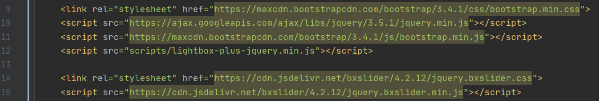
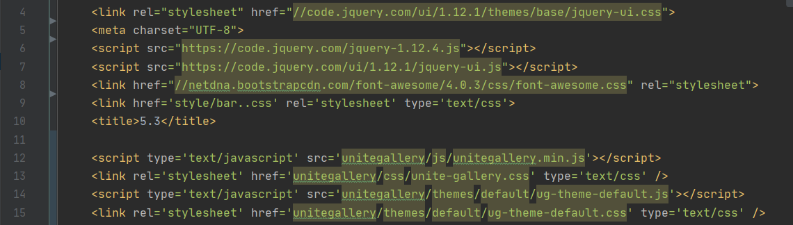
Динамічні елементи
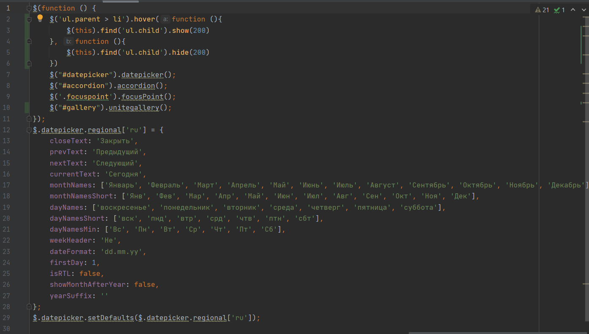
Accordion - набір елементів, що розгортаються/згортаються
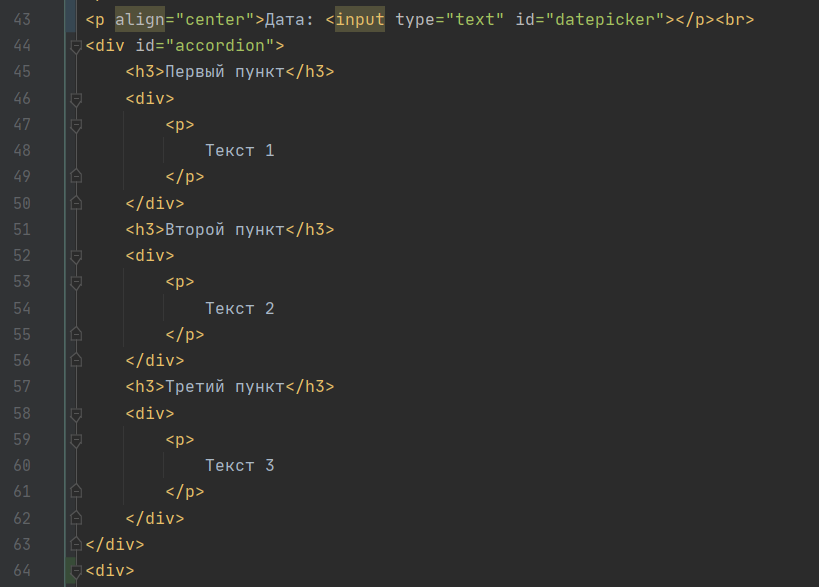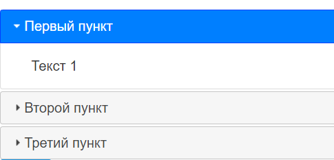
Datepicker - вибір дати з календаря
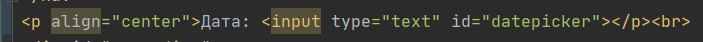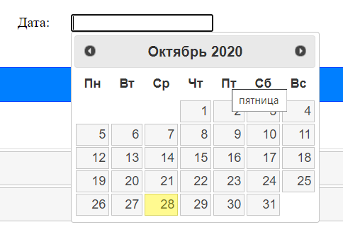
Menu – випадне меню
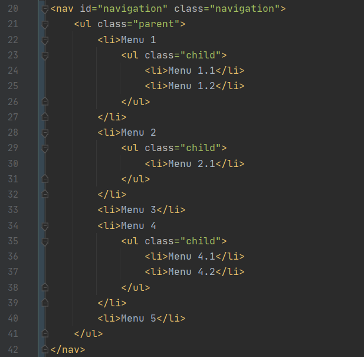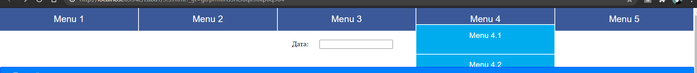
Плагін галереї LightBox
Фотогалерея з можливістю перегляду збільшених зображень
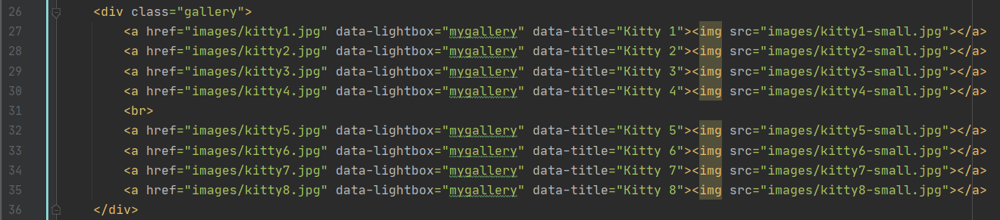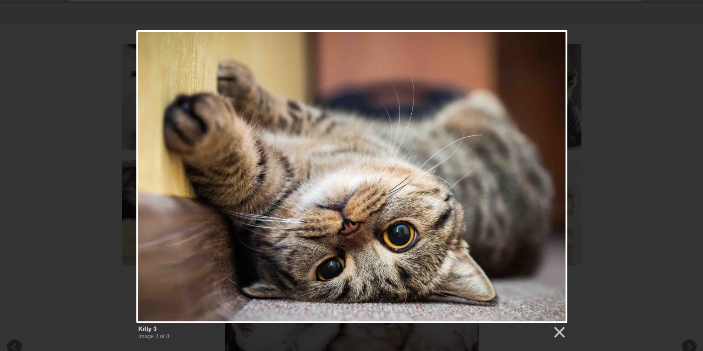
Cлайдер фотографій
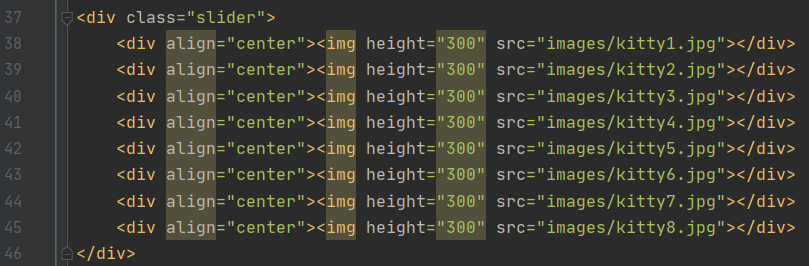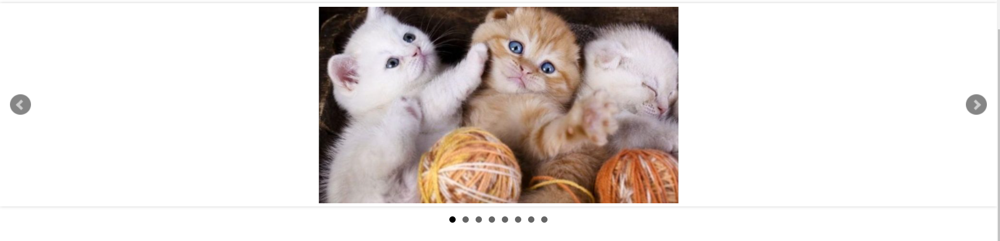
Cлайдер відео
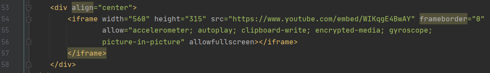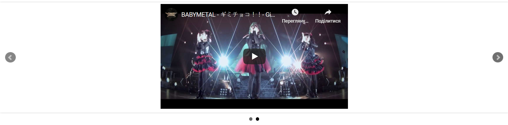
Кнопки соціальних мереж
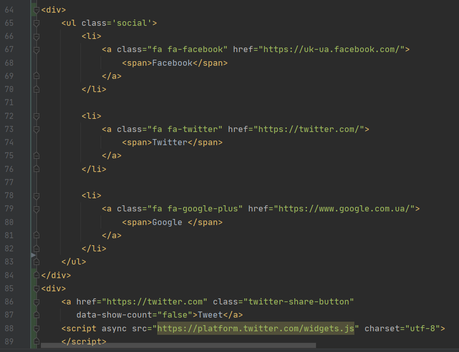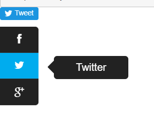
Інформери
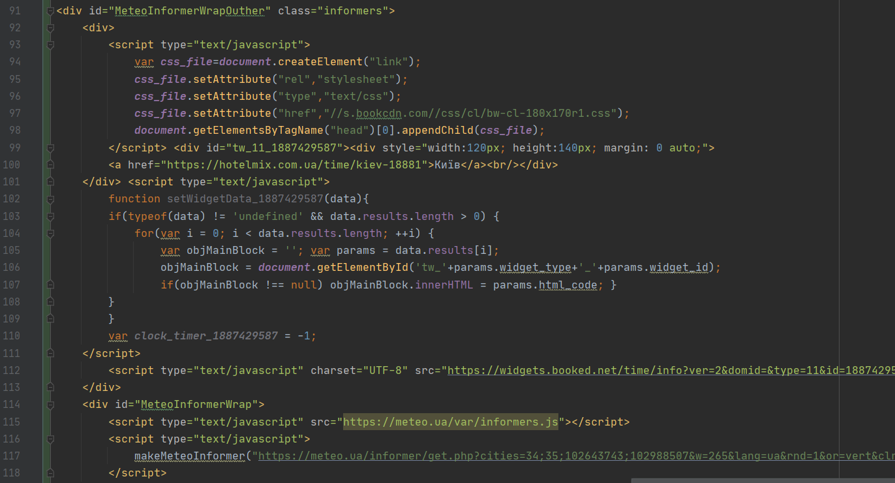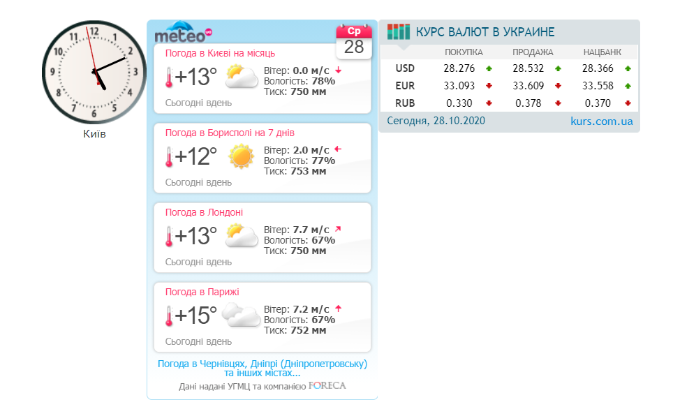
Модуль jQuery для мультимедіа
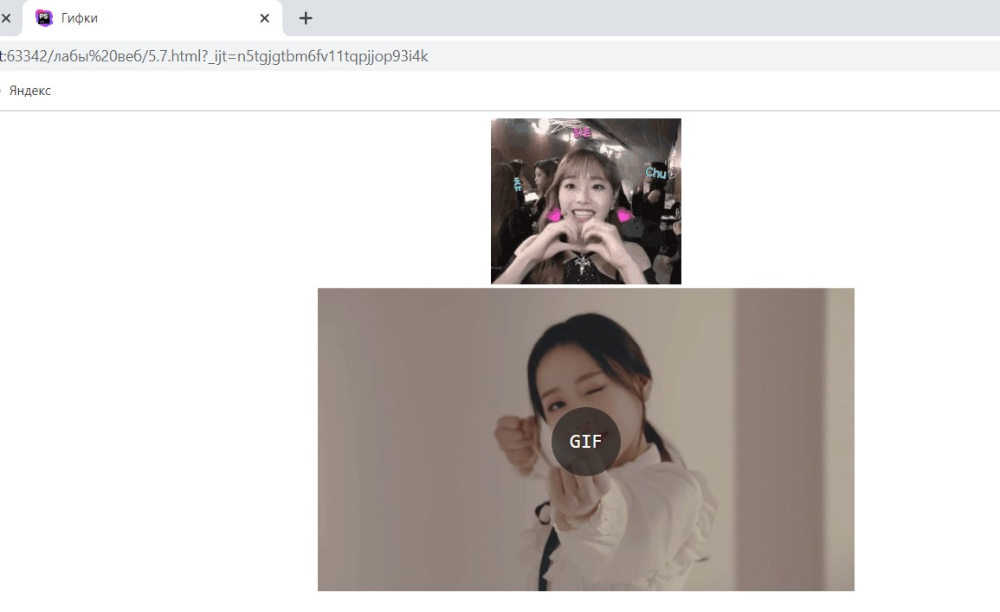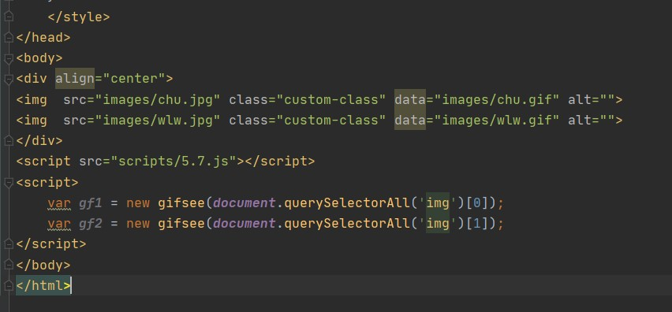
Висновок
На даній лабораторній ми навичлися використовувати JavaScript-бібліотек jQuery для динамічної розробки сайтів. Навчилися додатвати на сторінку такі динамічні елементи як Accordion, Datepicker, Menu, плагін галереї LightBox для ствроення слайдшоу фото/відео, готові кнопки соціальних мереж, разні інформери та використали один із модулів jQuery для мультимедіа.